Windows Home or pre-10 Installation
Installing Python
Environment File
We will start by downloading an environment file, which will later on install all packages that are relevant for your coding
NOTE: It would be best to create a dedicated folder (e.g. GDS_2020) for this module.
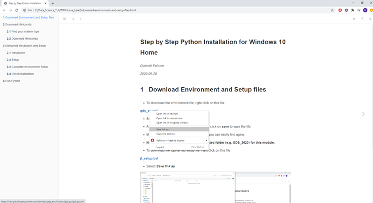
- To download the environment file, right click on this file
- Select Save link as.
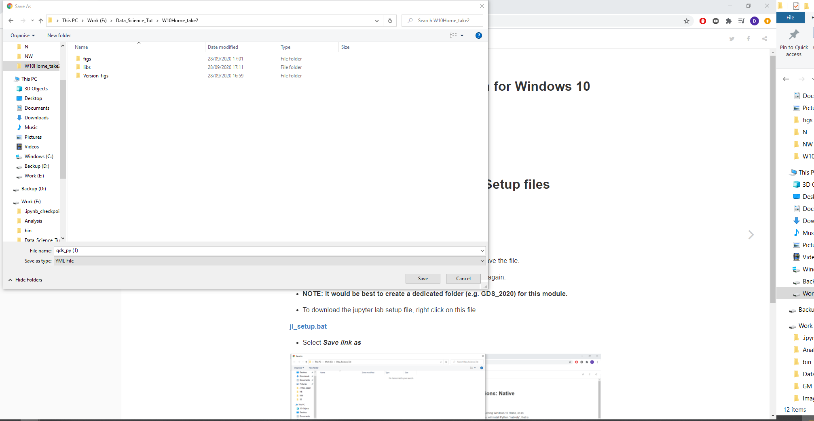
- A new window will pop up for saving the file, click on save to save the file.
- Make sure to save the file to a location that you can easily find again.
User interface
We will now download the file that will later setup your coding interface (which is called Jupyter Lab).
- To download the jupyter lab setup file, right click on this file
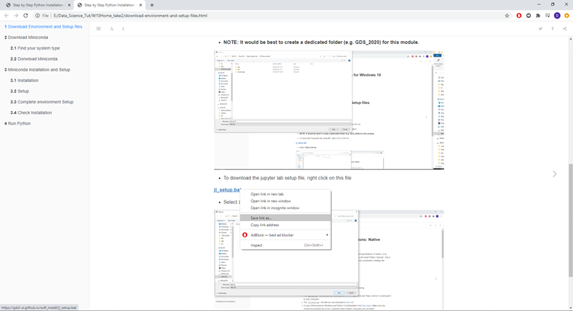
- Select Save link as
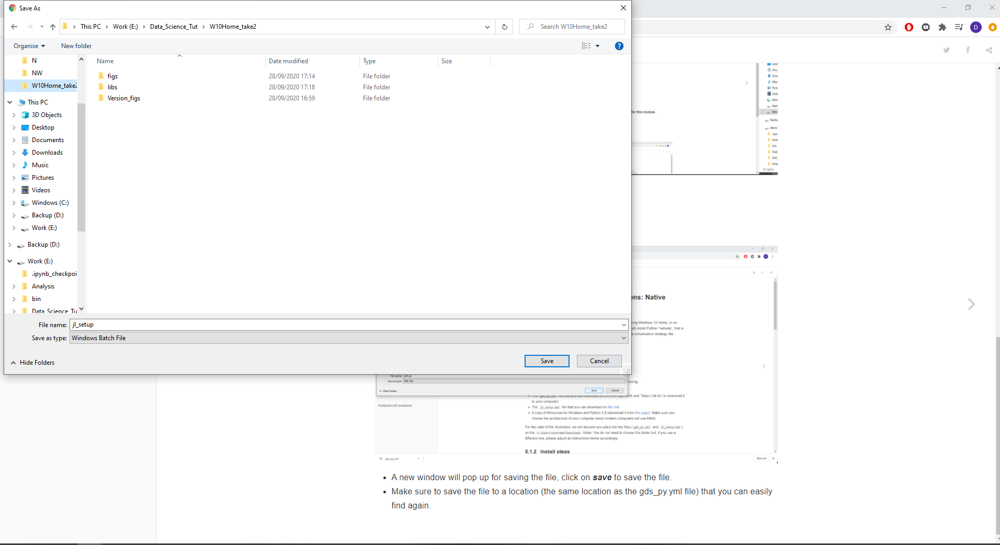
- A new window will pop up for saving the file, click on save to save the file.
- Make sure to save the file to a location (the same location as the
gds_py.ymlfile) that you can easily find again.
Download Miniconda
Find your system type
Before you can download Miniconda (which is a version of Anaconda), you need to find out what type your Windows system is. It can either be 32 bit or 64 bit (most modern computers use 64 bit).
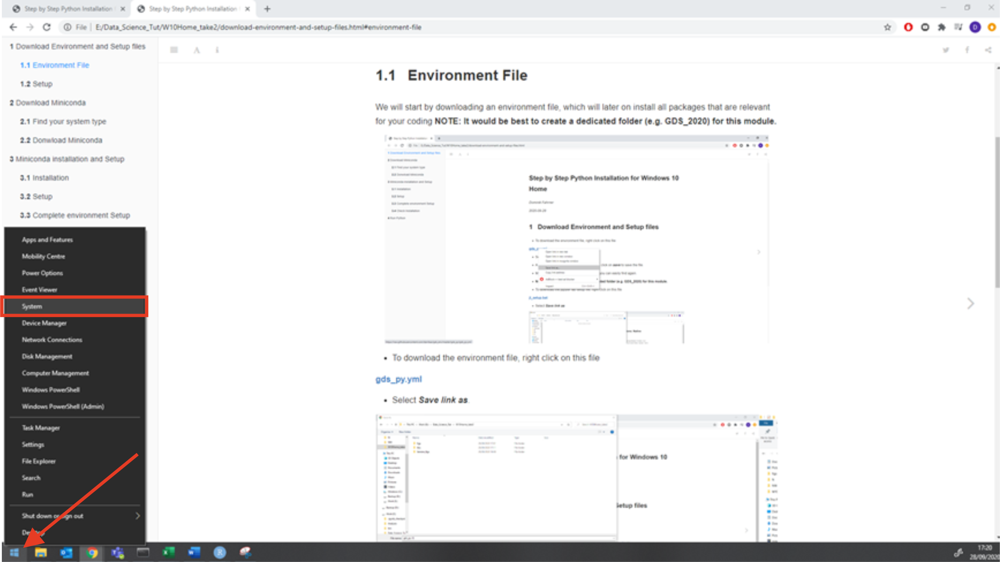
- Right click on the windows logo in the left bottom corner of the task menu and select System

- This will bring you to your system information page.
- Look at the System type section and check if your operating system is 64-bit or 32-bit (highlighted in red).
Donwload Miniconda
- Continue with opening this link to Miniconda by right clicking on the link and then selecting Open in new tab.

- This will bring you to the Miniconda download page shown above.
- You have installation files for two different Python version (2.7 and 3.8) and for two different Windows systems (32 bit and 64 bit).
- We are using Python 3.8, so depending on which windows version you are using (32-bit or 64-bit), click on the relevant file in the Python 3.8 section (highlighted in red).
- This will download the Miniconda installation file to your Downloads folder.
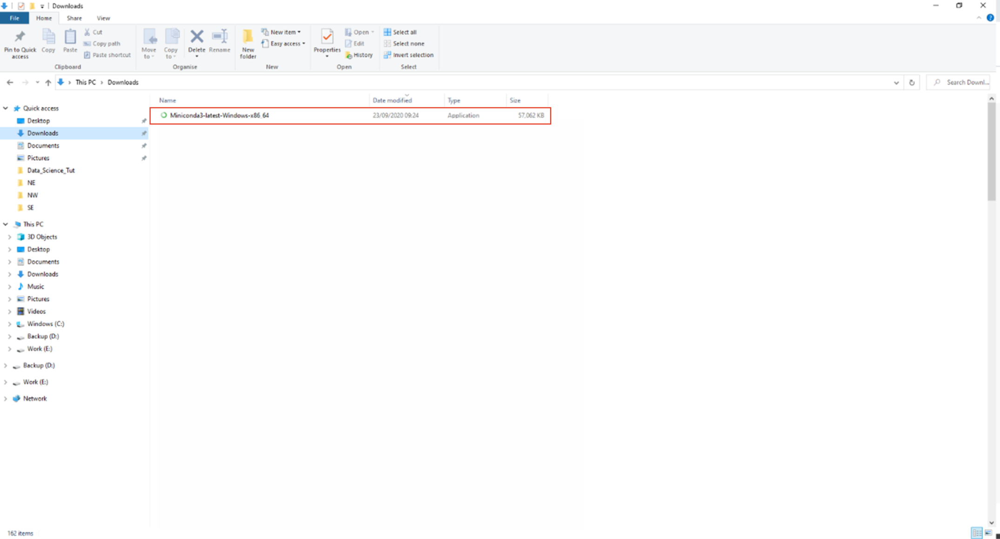
- Once the download has finished,navigate to your Downloads folder on your computer and double click on the Miniconda3-latest-Windows-x86_64 file to start the installation.
- Note: Double-check that you are installing the right version for your system.
Installing Minicoda

- Double clicking the downloaded file will open an installation window.
- Click Next on the first step.
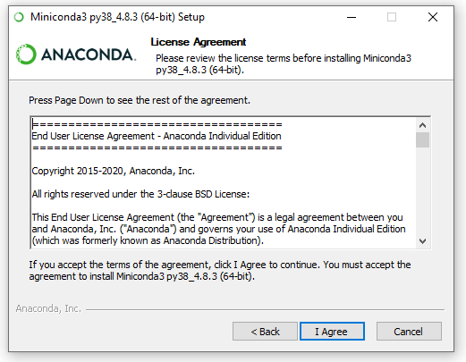
- Click I Agree in the next step which is the Terms and Conditions.

- In the next window, you can select if you want to install Miniconda for all users or just you.
- Check that Just Me is selected and click next.
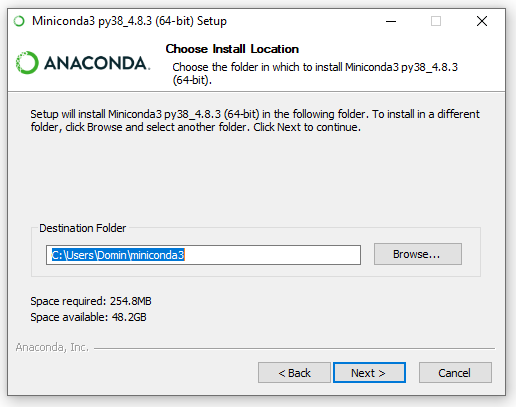
- The next window will ask you where to install Miniconda.
- Leave the path (highlighted in blue) as is and click next.
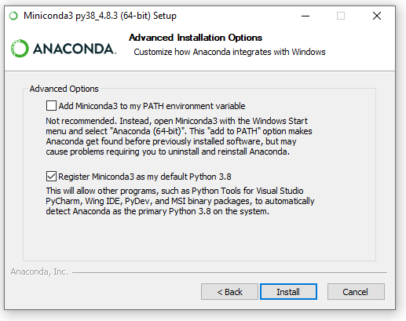 - The next window can be used for an advanced setup - Leave the default settings as they are (Box ticked at Register Miniconda3 as my default Python 3.8).
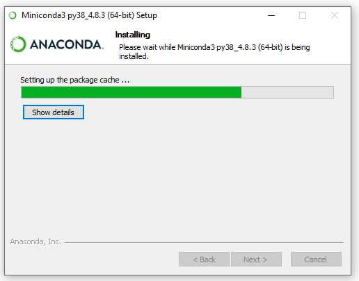
- Miniconda is now installing.
- Once the installation is complete, click Next.
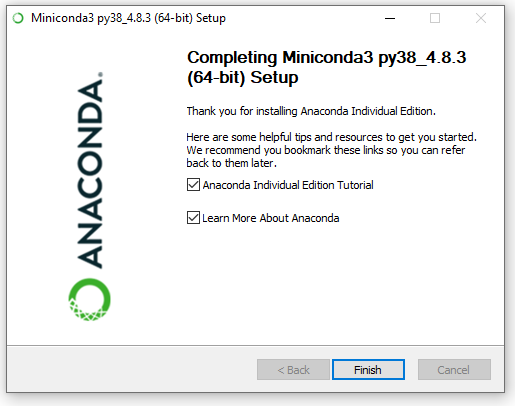
• Untick all boxes in the window (unless you want further information on Miniconda, which will open in your browser) and click Finish.
Running Minicoda

- Open Miniconda by clicking on the Windows icon on the bottom left of your screen and either type Anaconda or look for the Anaconda folder in the menu.
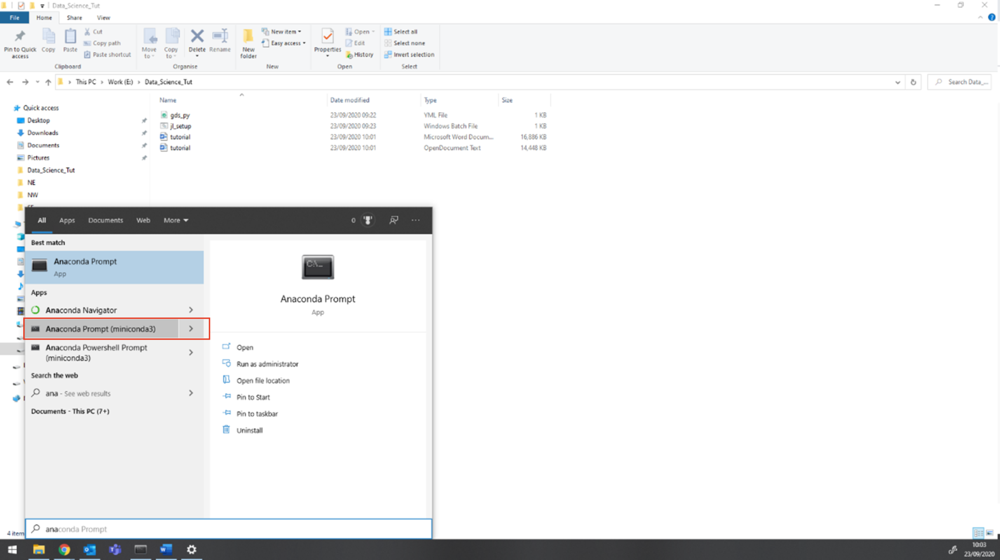
- To open Miniconda, click on Anaconda Prompt (miniconda3). Note: From now on we will refer to the prompt as Anaconda Prompt
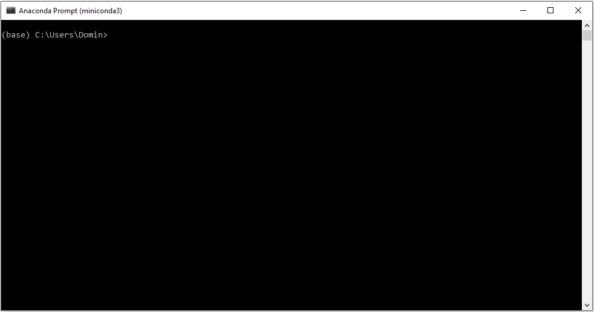
- This will open the Anaconda command prompt.
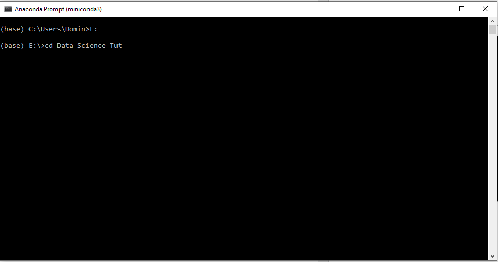
You now need to navigate to the folder that contains your environment (
_gds_py.yml_) and setup (_jl_setup.bat_) files.you can move to the folder by running
cdto move forward through folders andcd ..to move backwards.To run a command you simply press enter.
If your files are stored in e.g. C:/Users/Domin/Desktop/GDS_2020 you would write
cd Desktop/GDS_2020If your files are stored in a different location e.g. E:/Data_science_Tut, you would run
E:(to switch the harddrive) followed bycd Data_science_Tut.

- Once you have navigated to the location of your files, write the following in the Anaconda prompt and press enter to run it.
conda-env create -f gds_py.yml
- This will install all packages that are required to complete the course and setup your Python environment. ** Note: This might take a while as it is downloading all packages (~ 500 MB).**
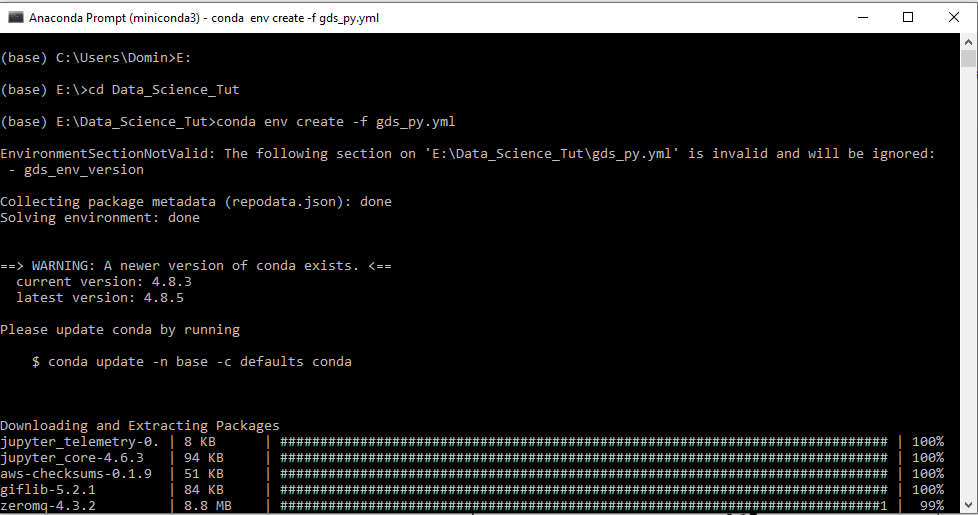
- The packages that are being installed will be shown in the Anaconda prompt.
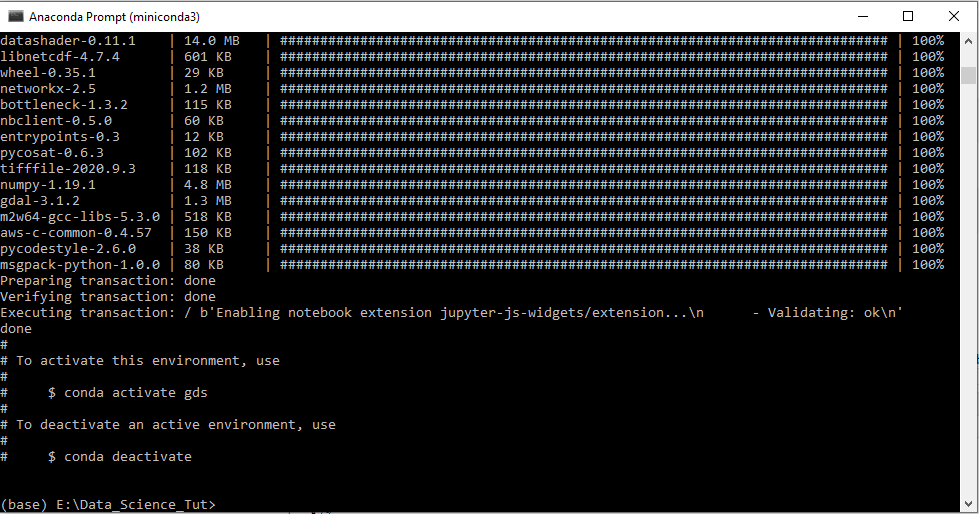
- Once all packages have been installed and your environment is created, you can activate the environment with the following command:
conda activate gds
0.0.1 Complete environment Setup
We will now complete the setup by installing the user interface (Jupyter Lab) which you will need to code.
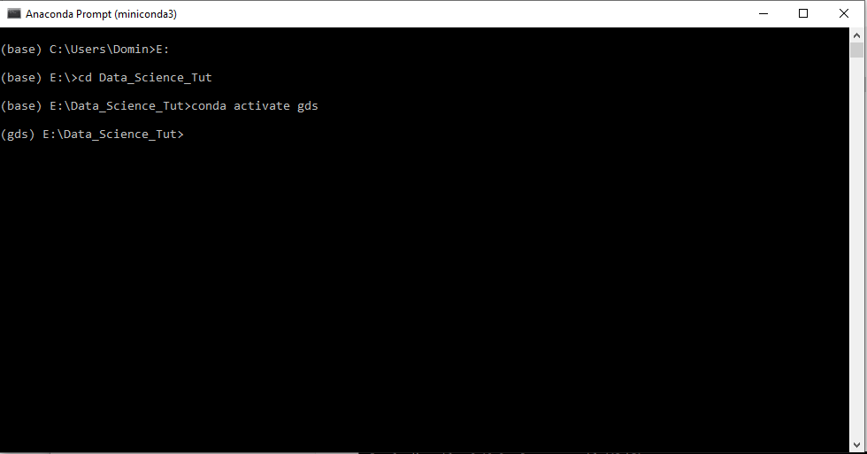
- Activate the environment by running :
conda activate gds
- You can see that the start of the line has changed from (base) to (gds).
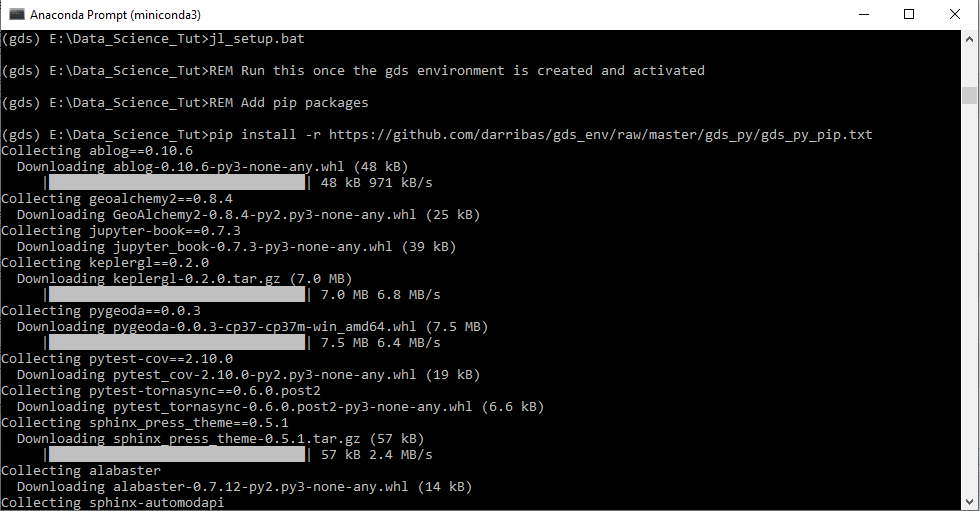
- In the same prompt, run the following command to complete the environment setup
jl_setup.bat
- The prompt will show you the further packages that are being installed.
NOTE: This might take a while depending on your internet connection (at least 10-15 minutes). NOTE: Do not close the Anaconda prompt yet as we will need it again.
0.0.2 Check Installation
To make sure that your installation was successful and all packages have been installed we need to run one more step.
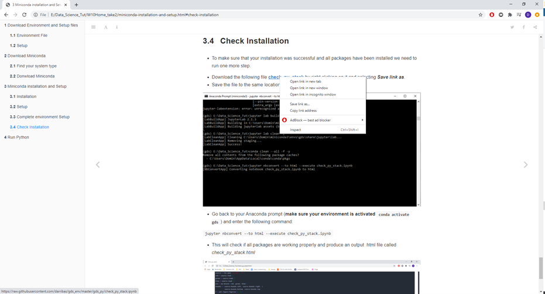
- Download the following file check_py_stack by right clicking on it and selecting Save link as.
- Save the file to the same location as all other files.
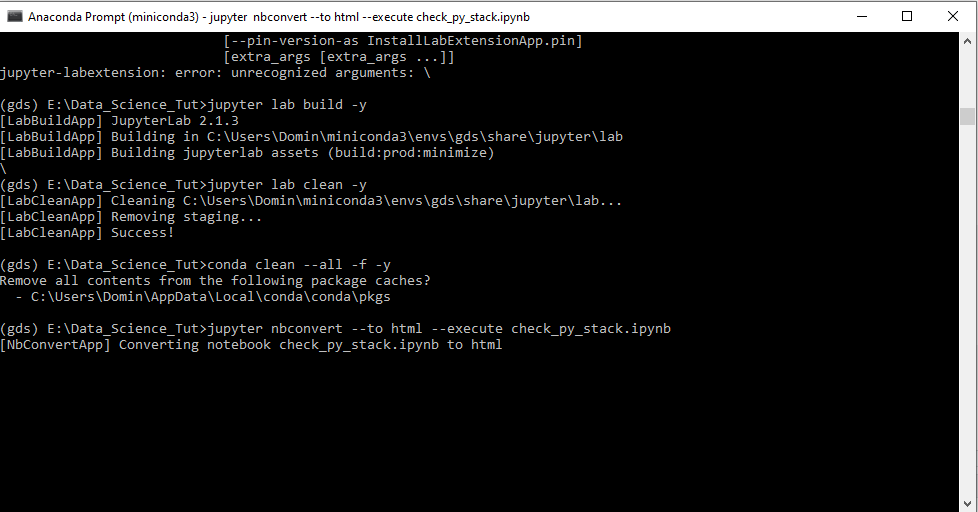
- Go back to your Anaconda prompt (make sure your environment is activated
conda activate gds) and enter the following command:
jupyter nbconvert --to html --execute check_py_stack.ipynb
- This will check if all packages are working properly and produce an output
.htmlfile called check_py_stack.html
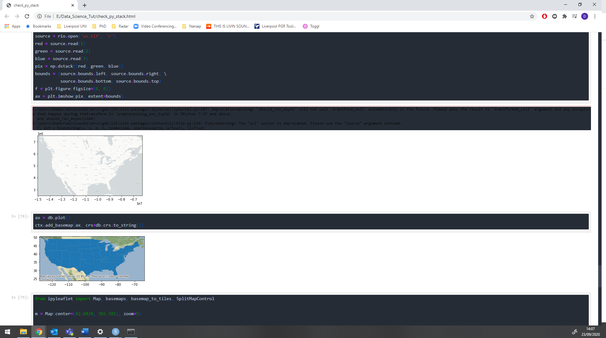
- Double clicking on the check_py_stack.html file will open the file in a browser and you can check if the code has produce an output in all cells.
Running Python
Now that you have successfully installed Python/Anaconda, you are ready to start coding. To launch your coding environment complete the following steps:
Start by opening an Anaconda Prompt (see first steps of section 3.2 on how to open an Anaconda prompt).
Navigate to the folder that you want to work in (It is recommended to have all your files in one folder with subfolders) using the
cdcommand.Activate your environment by running
conda activate gds.

- Run the command
jupyer labto start your coding interface. The coding interface will launch in your default browser (We recommend using Chrome or Firefox).
If your default browser is neither of the recommended, you can close the window that opens automatically, open Chrome/Firefox and past the URL from the Anaconda Prompt.
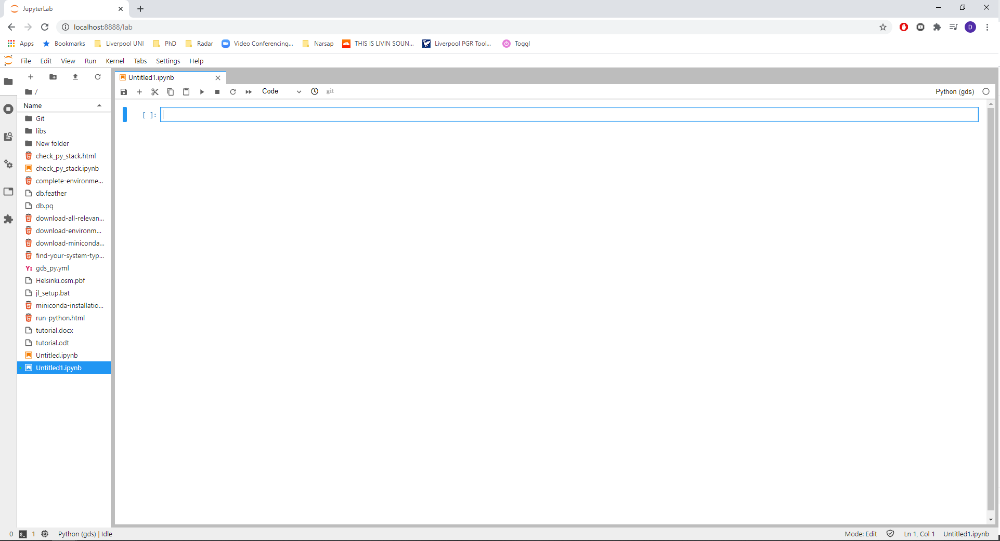 5. Jupyter Lab (your coding interface) will open automatically.
CONGRATULATIONS YOU HAVE NOW SUCCESFULLY INSTALLED PYTHON
You can now start coding